十二星座每日好运丨2026.08.01
8月1日，把今天拆成十二个小提醒。
先围绕“做有效选择”安排节奏，比急着追答案更有用。
火象星座
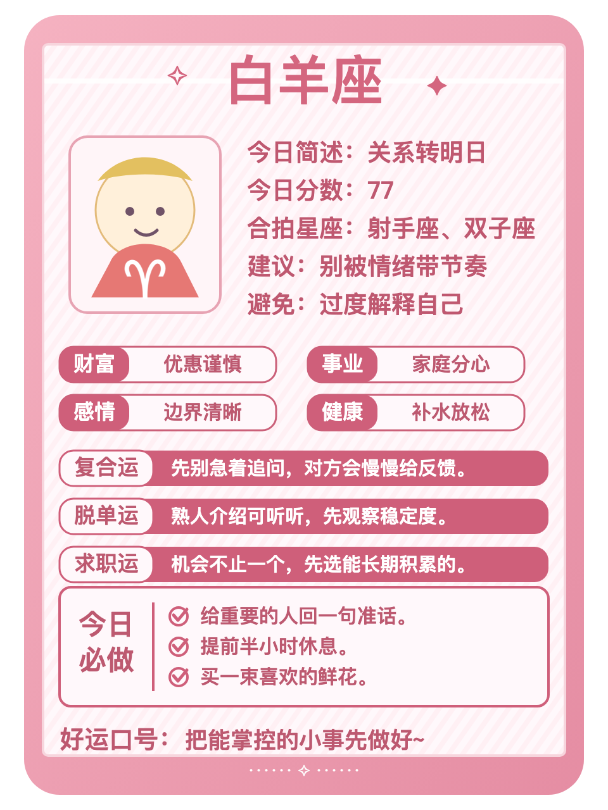
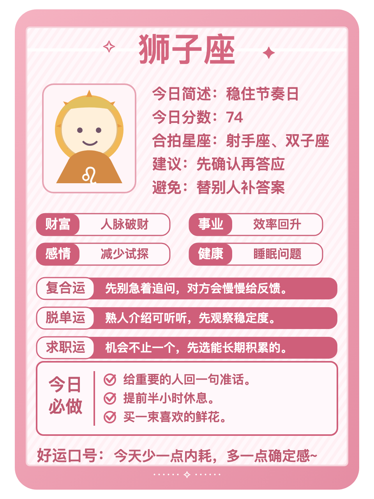
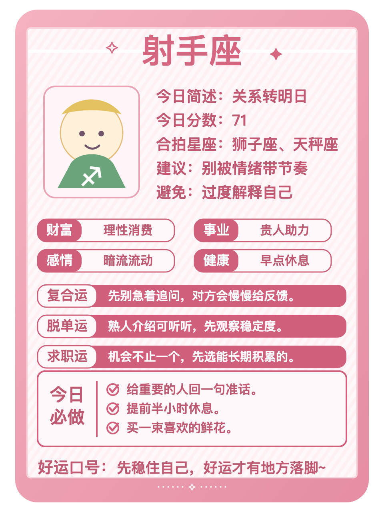
白羊：关系是今天的关键词。你们适合先把决定做小，先把回应稳定的人放在前面，再决定要不要加码。别把照顾所有人的期待变成任务。好运动作：发出那句需要确认的话。
狮子：今天更适合把支出、分摊或回款理清。愿意扛事会让你对外界反馈格外敏感，不必为了面子把账算得含糊。好运动作：把一个小邀约认真听完。
射手：人际距离需要跟着真实感受微调。你本来心气会动，今天把回应稳定的人放在前面会更顺。别把照顾所有人的期待变成任务。好运动作：发出那句需要确认的话。
土象星座
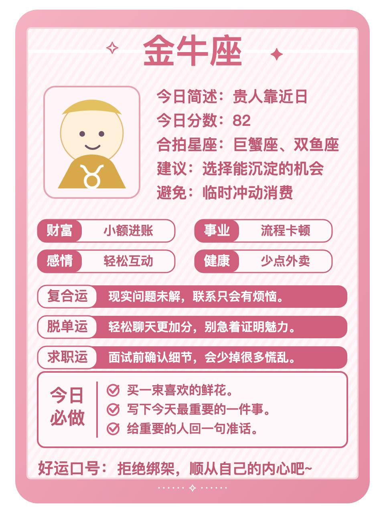
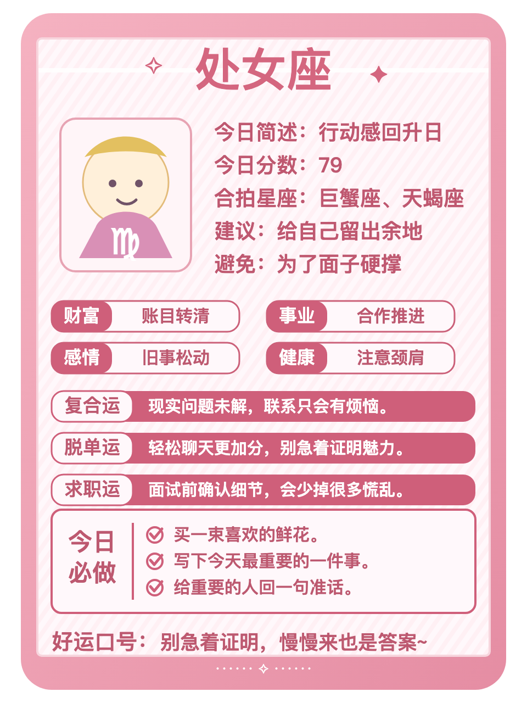
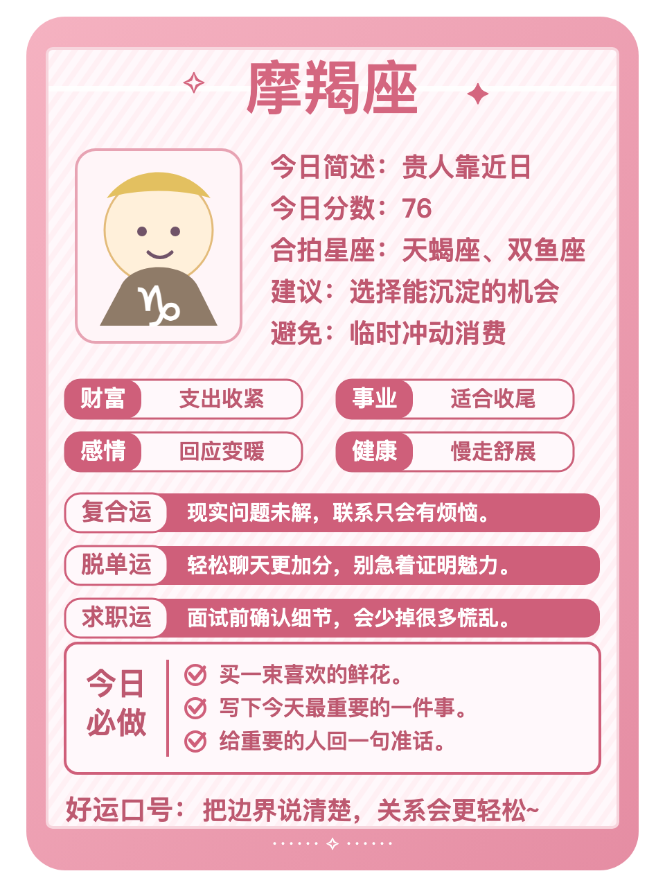
金牛：今天更适合删掉一件低回报的消耗。在意实际回报会让你对外界反馈格外敏感，别把忙碌误当成进展。好运动作：给自己留二十分钟安静整理。
处女：手上的关键任务适合往前推一点。你本来重视细节，今天先完成最卡的一步会更顺。别让临时消息替你决定优先级。好运动作：先写下今天最重要的一件事。
摩羯：减法是今天的关键词。你们适合守住边界，先删掉一件低回报的消耗，再决定要不要加码。别把忙碌误当成进展。好运动作：给自己留二十分钟安静整理。
风象星座
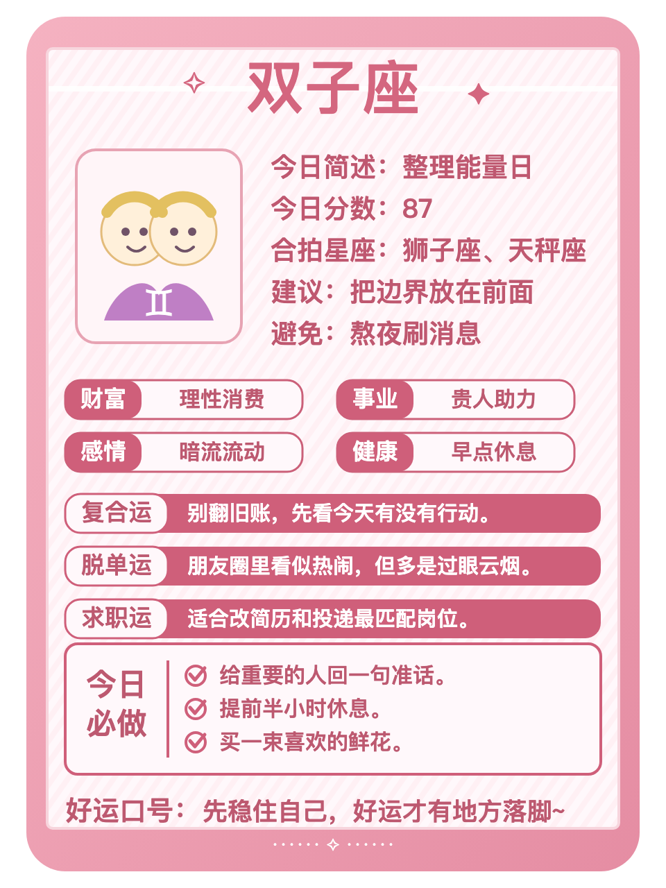
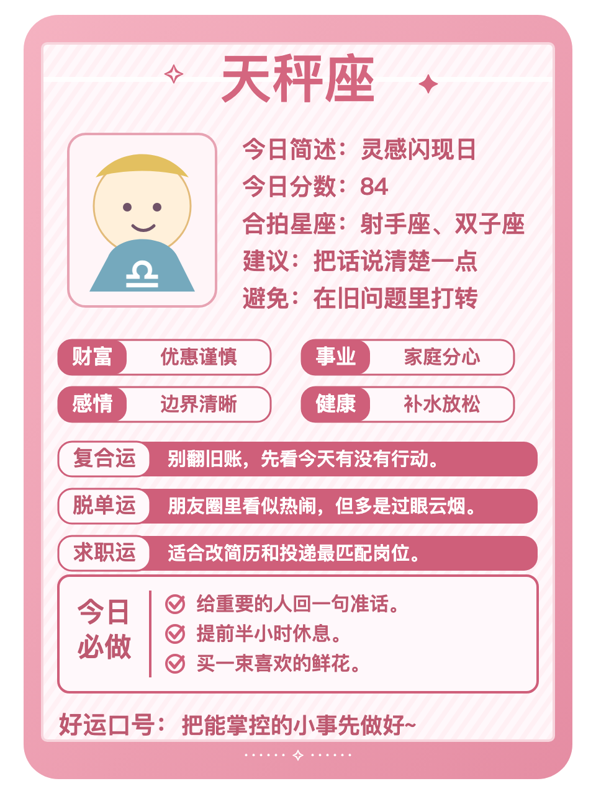
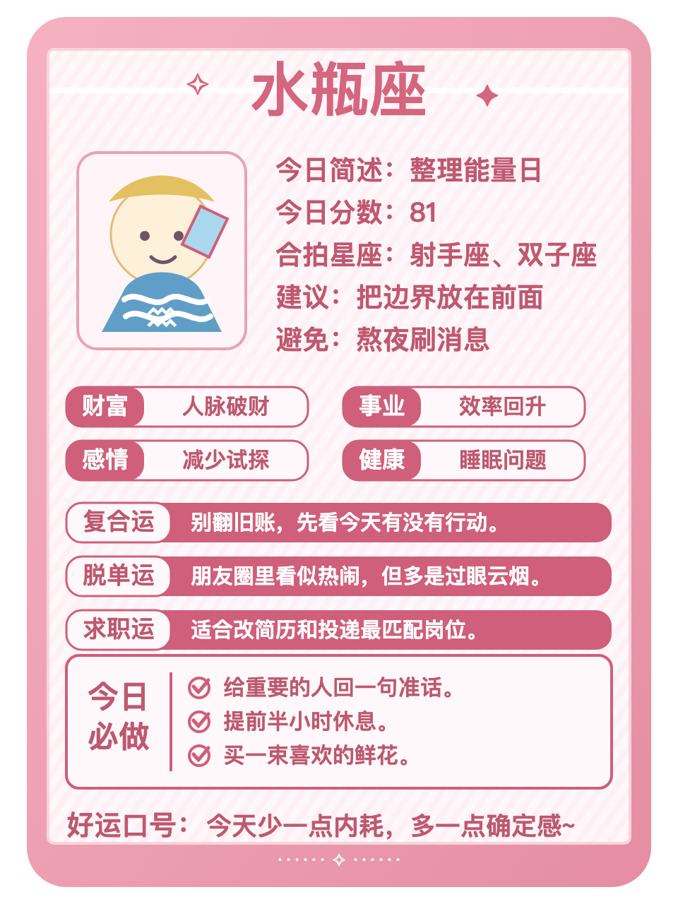
双子：关系里的真实反馈比猜测更重要。你本来反应快，今天把需要确认的话说清楚会更顺。不必替沉默找太多理由。好运动作：把注意力从比较里收回来。
天秤：收尾是今天的关键词。你们需要减少无效照顾，先把搁置的沟通或流程定下来，再决定要不要加码。少让拖延把情绪越拉越长。好运动作：结束一段重复沟通。
水瓶：今天更适合把需要确认的话说清楚。不喜欢被催会让你对外界反馈格外敏感，不必替沉默找太多理由。好运动作：把注意力从比较里收回来。
水象星座
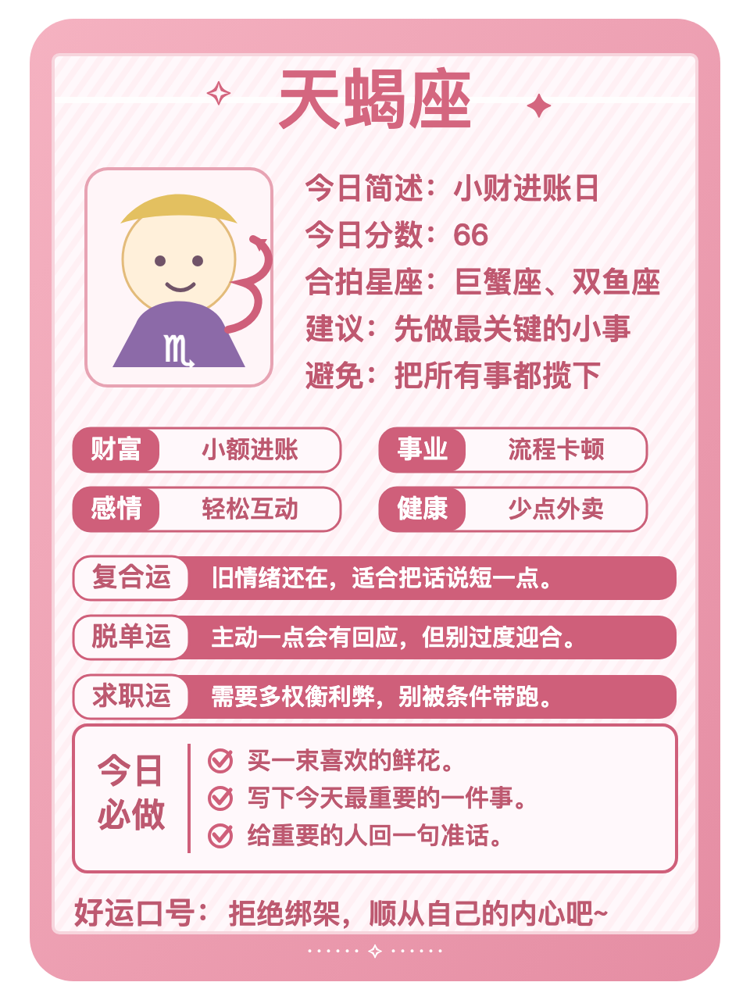
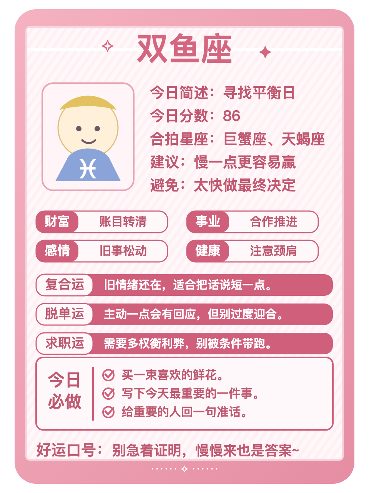
巨蟹：表达是今天的关键词。你们容易被旧习惯影响，先用简洁的话说出自己的需求，再决定要不要加码。不需要急着证明每一个判断。好运动作：收回一项不必要的支出。
天蝎：今天更适合多看一眼能积累资源的安排。不爱说破会让你对外界反馈格外敏感，别为了热闹接下所有事情。好运动作：把未完成的事标出截止点。
双鱼：适合把真实想法放到台面上。你本来感受细腻，今天用简洁的话说出自己的需求会更顺。不需要急着证明每一个判断。好运动作：收回一项不必要的支出。
今日收束：让小动作慢慢沉淀成收获。把注意力放回可以行动的部分，稳定一点，今天的状态就会更容易接住。